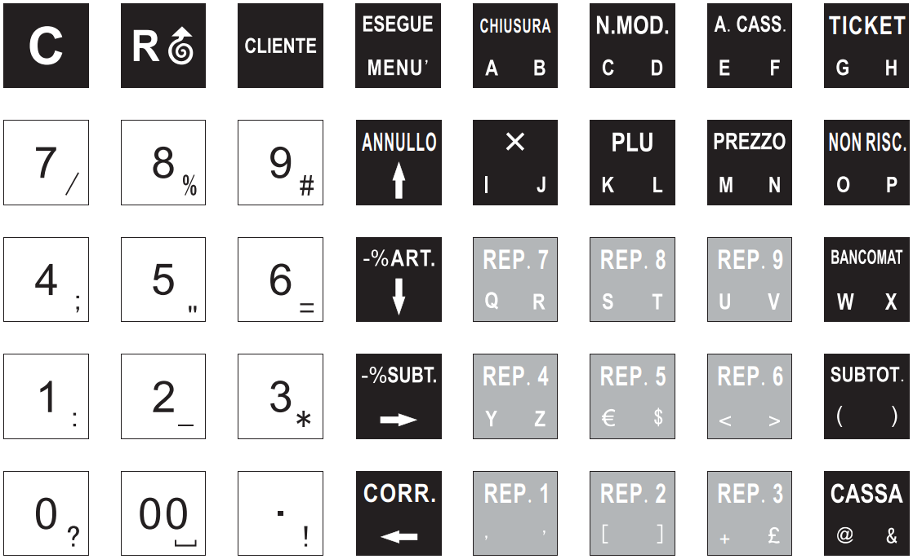
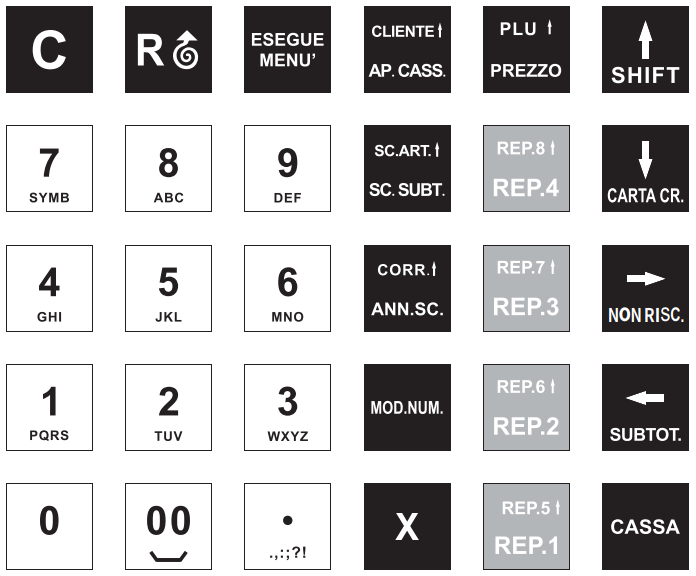

Primi passi e vendita
Panoramica
Questo capitolo descrive la tastiera, il menu e le operazioni di vendita di base: reparti, articoli, modificatori, sconti, maggiorazioni e pagamenti.
Primi passi
Display e stampante
Il display mostra due righe di testo, tranne su Zero Plus e Tour+ che ne mostrano una. La stampante lavora su una larghezza di 32 colonne su tutti i modelli.
Tastiera
I modelli Zero Plus e Jolly hanno una tastiera a 30 tasti. Smarty Plus, Tour+, Smarty evo e Smarty evo+ hanno una tastiera a 40 tasti.


I tasti numerici inseriscono cifre e, con la modalità alfabetica, lettere e simboli. Il tasto punto (.) inserisce il separatore decimale. Il tasto X esegue la moltiplicazione. Il tasto C cancella il valore digitato. Il tasto CLIENTE apre l'inserimento del cliente. Il tasto PLU richiama un articolo per codice. Il tasto PREZZO serve per digitare o modificare un prezzo.
- Zero Plus e Jolly: tastiera a 30 tasti.
- Smarty Plus, Tour+, Smarty evo e Smarty evo+: tastiera a 40 tasti.
da confermare: la posizione fisica e l'etichetta esatta di ogni tasto su ciascun modello, incluso il tasto che attiva la modalità alfabetica. Le figure mostrano la disposizione tipica dei modelli a 30 e a 40 tasti.
Menu
Il tasto MENU (ESEGUE) conferma la sequenza di inserimento e avvia la funzione richiesta. Le funzioni sono richiamate per numero. Per cosa fa ciascuna, vedi la Tavola delle sequenze nel capitolo Tabelle e codici.
per richiamare una funzione si digitano le tre cifre del suo numero e si preme MENU. La sequenza è la stessa su tutti i modelli.
Vendita
Reparti
Un reparto registra una vendita a importo libero. Si digita l'importo e si preme il tasto del reparto (REP.). I tasti REP. sono visibili nelle figure della tastiera. Con quantità si digita la quantità, si preme X, si digita il prezzo unitario e si preme il tasto REP.
- Smarty evo+: 40 reparti.
- Smarty evo, Smarty Plus, Smarty Tour+ e Jolly: 20 reparti.
- Zero Plus: 8 reparti.
Superamento del limite di reparto
Ogni reparto può avere un importo massimo per battuta. Se l'importo supera il limite, la cassa chiede un codice di autorizzazione.
- Digitare l'importo che supera il limite e premere il tasto del reparto.
- Quando la cassa chiede il codice, digitare il codice di autorizzazione e premere MENU. Il codice è riservato all'assistenza.
l'autorizzazione al superamento va abilitata in programmazione. Vedi la sezione Autorizzazioni del capitolo Programmazione.
Articoli PLU
Un articolo PLU registra una vendita con prezzo e descrizione memorizzati. Si digita il codice e si preme il tasto PLU.
Il codice PLU fino a 5 cifre richiama l'articolo per numero; con più cifre il registratore cerca l'articolo per codice a barre. Se per l'articolo si digita un prezzo, questo prevale su quello memorizzato; altrimenti si usa il prezzo memorizzato.
- Smarty evo+, Smarty evo, Smarty Plus, Smarty Tour+ e Jolly: articoli PLU numerati da 1 a 10000.
- Zero Plus: articoli PLU numerati da 1 a 5000.
Moltiplicazione e punto decimale
La moltiplicazione usa il tasto X: si digita la quantità, si preme X e poi si digita il prezzo unitario.
Il punto decimale viene gestito dall'opzione PUNTO ESPLICITO. Quando l'opzione è attiva, il separatore va digitato in modo esplicito.
con PUNTO ESPLICITO attiva, una moltiplicazione con decimali può chiudersi con PREZZO o con il tasto REP., per esempio 12.34 X 23.45 seguito da REP. Con l'opzione disattiva questa sequenza dà errore.
Correzioni
Il tasto C cancella il valore digitato prima di confermarlo.
Per annullare un articolo già registrato si usa il modificatore 1 (ANNULL.), richiamato con MOD.NUM. (M), poi si digitano prezzo e reparto dell'articolo da annullare.
ANNULL. non è disponibile dopo uno sconto o una maggiorazione sul subtotale.
Modificatori
I modificatori applicano uno sconto, una maggiorazione, un omaggio, un acconto o un buono. Si richiamano con il tasto MOD.NUM. (M) seguito dal numero della tabella.
| Numero | Nome in stampa | Uso |
|---|---|---|
| 1 | ANNULL. | annulla un articolo già registrato, indicato con reparto e prezzo |
| 2 | -% (ART) | sconto percentuale sull'articolo |
| 3 | -% (SBT) | sconto percentuale sul subtotale |
| 4 | -$ (ART) | sconto a importo sull'articolo |
| 5 | SCONTO | sconto |
| 6 | +% (ART) | maggiorazione percentuale sull'articolo |
| 7 | +% (SBT) | maggiorazione percentuale sul subtotale |
| 8 | +$ (ART) | maggiorazione a importo sull'articolo |
| 9 | +$ (SBT) | maggiorazione a importo sul subtotale |
| 10 | RESO | reso |
| 11 | VERSAMENTO | versamento in cassa |
| 12 | PRELIEVO | prelievo dalla cassa |
| 13 | RECUP.CREDITI | recupero crediti |
| 14 | OMAGGIO | omaggio |
| 15 | ACCONTO | acconto |
| 16 | BUONO MONO USO | buono monouso |
| 17 | BUONO MONO USO per aliquota | buono monouso per aliquota IVA |
| 18 | ACCONTO per aliquota | acconto per aliquota IVA |
I numeri 11, 12 e 13 non si possono usare durante una vendita. Il modificatore 10 e i numeri da 14 a 18 sono accettati durante una vendita. Dopo uno sconto non si può richiamare lo stesso tipo di modificatore, con alcune eccezioni (reso, omaggio, acconto e buono monouso).
L'acconto (15) non si può usare su un reparto di servizio. Mentre è attivo un acconto su bene o su servizio, non si possono richiamare i modificatori 15, 16 e 17.
il tasto diretto (m) richiama la voce successiva a quella di MOD.NUM. (M): m 1 corrisponde a M 2, cioè -% (ART).
Sconti e maggiorazioni
Gli sconti e le maggiorazioni si applicano con i modificatori da 2 a 9. Gli sconti sull'articolo agiscono sulla riga selezionata. Gli sconti sul subtotale agiscono sull'importo complessivo.
Gli sconti si possono anche applicare con queste sequenze. Dopo il valore si preme PREZZO, poi il numero del modificatore, poi N.MOD.
| Sconto | Sequenza |
|---|---|
| Percentuale su una battuta | battere l'articolo sul reparto, digitare la percentuale (per esempio 10), PREZZO, 2, N.MOD. |
| Percentuale sul subtotale | battere gli articoli, SUBTOTALE, digitare la percentuale (per esempio 20), PREZZO, 3, N.MOD. |
| Valore su una battuta | battere l'articolo sul reparto, digitare l'importo (per esempio 500 per 5,00 €), PREZZO, 4, N.MOD. |
| Valore sul subtotale | battere gli articoli, SUBTOTALE, digitare l'importo (per esempio 1000 per 10,00 €), PREZZO, 5, N.MOD. |
Le opzioni di arrotondamento sono descritte nella sezione Opzioni di vendita.
Acconti
L'acconto registra un pagamento anticipato su un bene o su un servizio. L'importo versato in acconto viene poi detratto dal saldo.
Acconto su bene
- Digitare 935 e premere MENU.
- Inserire l'importo dell'acconto, premere il reparto e il tipo di pagamento. Lo scontrino si chiude.
- Alla consegna del bene, battere l'importo totale del bene e premere il reparto.
- Digitare l'importo dell'acconto già versato, premere PREZZO, poi digitare 15 e premere N.MOD. (modificatore ACCONTO).
- Chiudere lo scontrino riscuotendo il saldo.
Acconto su servizio
- Digitare 939 e premere MENU.
- Inserire l'importo totale del servizio e premere il reparto.
- Digitare l'importo effettivamente pagato in acconto e premere il tasto di pagamento (contanti o elettronico).
- Per la parte ancora da pagare premere NON RISCOSSO.
- Per incassare il saldo, digitare l'importo rimanente, premere il reparto e il tipo di pagamento utilizzato.
Pagamenti e resto
Il pagamento chiude la vendita. Si premono i tasti di pagamento (ad esempio CASSA, BANCOMAT, TICKET e NON RISCOSSO, come nelle figure). Se il pagamento supera il totale in contanti, il registratore mostra il resto.
Se il tipo di pagamento non consente il resto, il registratore segnala DIVIETO RESTO.
Il pagamento TICKET richiede il numero dei ticket. La sequenza è il numero dei ticket, poi x, poi il valore di un ticket.
il resto si ottiene solo con il pagamento in contanti. Elettronico, NON RISCOSSO, TICKET e SCONTO A PAG non danno resto.
Scontrino
Al termine dei pagamenti il registratore stampa lo scontrino. Il dettaglio dell'intestazione, del cliente e dell'IVA è descritto nel capitolo Documenti fiscali e fattura.
Movimenti di cassa
I movimenti di cassa registrano un prelievo o un versamento di contanti. Il prelievo è la funzione 933. Il versamento è la funzione 934.
si digitano le tre cifre della funzione (933 o 934) e si preme MENU, poi si digita l'importo e si preme il tasto di pagamento in contanti. Il movimento viene stampato come scontrino non fiscale. Su Smarty evo+ il movimento richiede un cassiere attivo.
Opzioni di vendita
Le opzioni si attivano dal menu di programmazione, descritto nel capitolo Programmazione.
| Opzione | Nome | Effetto |
|---|---|---|
| 4 | ARROT.EUROPEO | arrotondamento europeo |
| 5 | STAMPA SUBTOTALE | stampa il subtotale sullo scontrino |
| 20 | PUNTO ESPLICITO | separatore decimale da digitare esplicitamente |
| 40 | STAMPA CLIENTE | stampa il cliente quando è attivo |
| 41 | STAMPA PAGAMENTI | stampa i dettagli dei pagamenti |
| 48 | SCONTO ARR.SUBT | arrotondamento sullo sconto del subtotale |
| 49 | ARR.DL N.50/2017 | arrotondamento secondo il decreto legge 50/2017 |
ARROT.EUROPEO (4) arrotonda a multipli di 5 centesimi (0-2 centesimi per difetto, 3-4 per eccesso) gli importi ottenuti da percentuali e gli importi ripetuti di reparto e articolo. PUNTO ESPLICITO (20) abilita la sequenza con decimali descritta sopra. SCONTO ARR.SUBT (48), con pagamento tutto in contanti, tronca il subtotale ai 5 centesimi e applica la differenza come sconto automatico. ARR.DL N.50/2017 (49) arrotonda il subtotale ai 5 centesimi (0-2 per difetto, 3-4 per eccesso) e stampa la riga ARRO. DL N.50/2017; non può restare attiva insieme all'opzione 48.
- Opzioni 10 e 11: su Zero Plus e Jolly si chiamano SCONTO ART VAL e SCONTO SUB VAL. Su Smarty Plus, Tour+, Smarty evo e Smarty evo+ si chiamano MOD %ART POSIT. e MOD %SUB POSIT.
- Opzione 23 (REP.9/REP.IND.): disponibile solo sulle tastiere a 40 tasti (Smarty Plus, Tour+, Smarty evo e Smarty evo+).
- Opzione 44 (SHIFT PERMANENTE): disponibile solo sulla tastiera a 30 tasti (Zero Plus e Jolly).
- Smarty evo+ gestisce i cassieri, fino a 8. Gli altri modelli non hanno questa gestione.